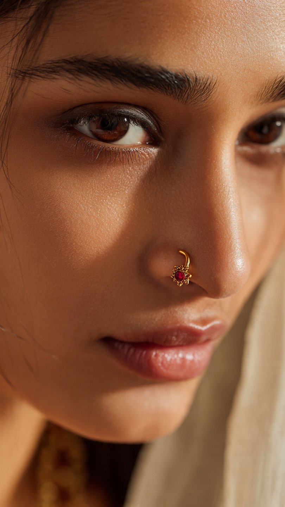
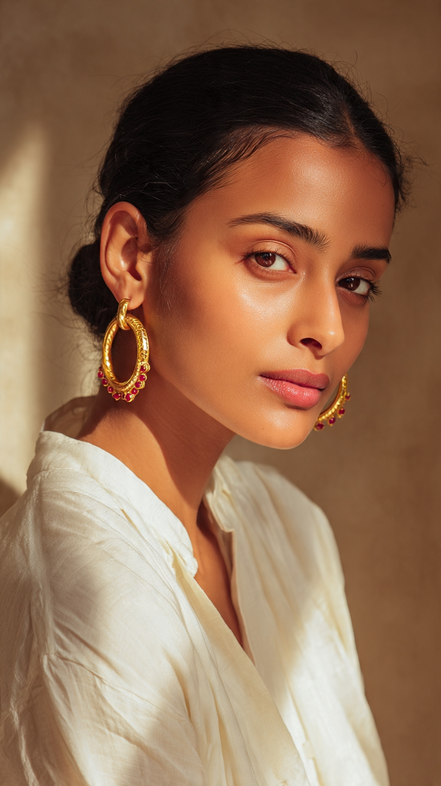
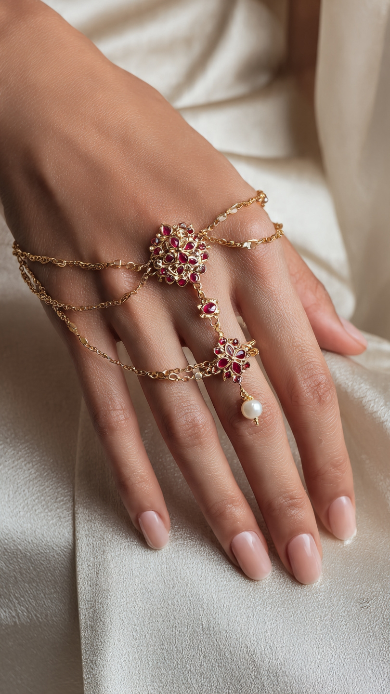

Featured Collections

Nose Ring
Price:R 1,850
Material: 18K gold over sterling silver with a single lab-created ruby.
Craftsmanship: Delicate floral nose pin with curved hook design. Traditional star motif inspired by Mughal jewellery. Handmade by goldsmiths in Rajkot, Gujarat.

Queen Hoop Earings
Price:R 3,800
Material: 18K gold over sterling silver with lab-created ruby accents.
Craftsmanship: Textured gold hoops with carved detailing and small hanging red stones. Inspired by royal Rajasthani jewellery. Lightweight and made by skilled artisans in Jaipur.

Hand Chain
Price:R 5,400
Material: 18K gold over sterling silver with lab-created rubies and freshwater pearl drop.
Craftsmanship: Bridal hand chain with two floral clusters, connecting bracelet to ring. Set with deep red stones and pearl detail. Handcrafted by master artisans in Rajkot for heirloom wear.

Price:R Turquoise Set
Material: 18K gold over sterling silver with turquoise and lab-created emerald accents.
Craftsmanship: Matching lattice pendant, wide band ring, and link bracelet. Open work patterns inspired by Mughal jali screens. Turquoise stones add a modern touch. Made by family artisans in Jaipur.